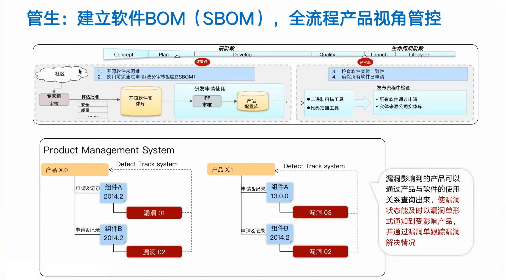
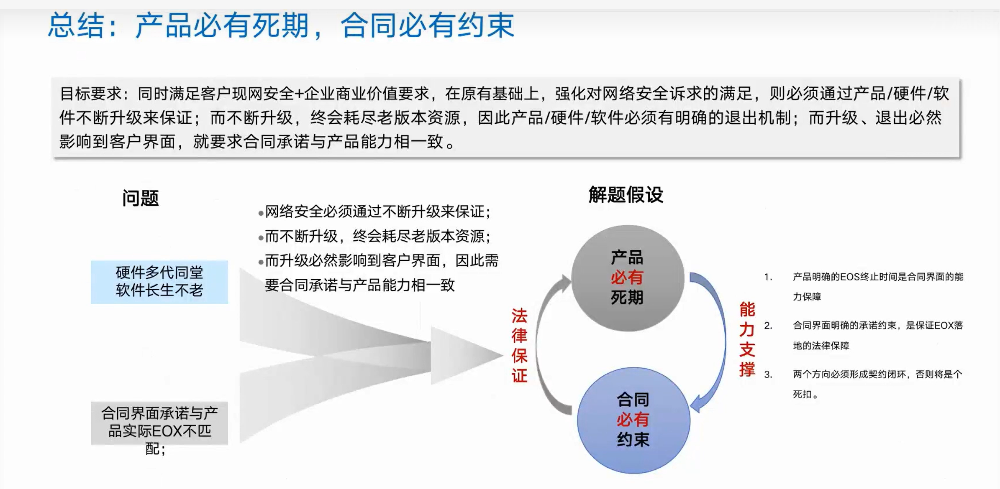

软件生命周期管理
生命周期管理的目标
- 提升安全
- 收束开源软件版本，不使用过老的版本，消除多副本问题，减少攻击面
- 有限承诺，控制成本
- 不可能无限期的维护下去
- 对齐节奏
- 公司内部各个团队，围绕对外交付的产品，协调一致工作
- 开源及第三方软件的生命周期，应该能够覆盖产品软件的生命周期
- 明确责任
- 在不同的时间节点，不同的角色，需要承担不同的责任
软件产品生命周期关键概念
- GA 的全称是：General Availability
- 定义：指产品包可以大批量交付给客户的时间。
- EOM 的全称是：End of Marketing
- 定义：产品停止接受新建和扩容订单。
- EOFS 的全称是：End of full support
- 定义：停止为软件版本开发新补丁。
- EOS 的全称是：End of service&support
- 定义：停止对软件版本提供服务。
- 时间节点：GA --> EOM --> EOFS(可选) --> EOS
开源软件生命周期管理规则
选型引入的开源软件版本生命周期关键点包括：引入点、停止配套（EOM）。开源软件版本引入点，实际是指火车版本的发布时间点（GA）。只有火车版本发布了，才算这款开源软件版本正式引入，允许产品选用。
停止配套即EOM，指停止在产品或平台软件版本中进行配套选用；产品软件版本GA前时只能选用未EOM的开源软件版本。
开源软件的生命周期时间点（EOX）由开源软件Owner团队综合其技术生态、合法合规、生命周期、网络安全、归一化等维度确定并维护。
生命周期终止决策评审机制
产品软件版本、平台软件版本EOX决策由版本立项决策组织或其授权组织进行决策。
开源软件版本的停止配套时间由所属火车版本立项决策组织或其授权组织进行决策。
存在耦合关系的情况下，需邀请受影响的产品/版本的相关代表参与决策。
案例：ONUS安全事故
- 越南最大的加密交易平台之一 —— ONUS，因其支付系统运行的Log4j版本存在漏洞而遭到黑客攻击。
- 黑客找到ONUS，向其勒索500万美元，并威胁说如果ONUS拒绝支付，他们就在网上公布ONUS的客户数据。ONUS拒绝了这个勒索，于是黑客就在论坛上公开销售了近200万ONUS客户的数据。
- Cyclos是一家提供一系列POS和支付软件解决方案的供应商，他们在软件中使用了易受攻击的Log4j版本。据报道称，虽然Cyclos在13日发出了一个警告，也通知了ONUS为系统打补丁，但一切都已太晚，曝光窗口已经让黑客有足够的时间渗入敏感数据库。
- Log4j漏洞可能只是攻击者的切入点，而ONUS在Amazon S3存储桶上不恰当的访问控制，让攻击者有了可乘之机。
- 安全漏洞发生之后，不能只修补一个地方
- 不能只考虑漏洞本身



